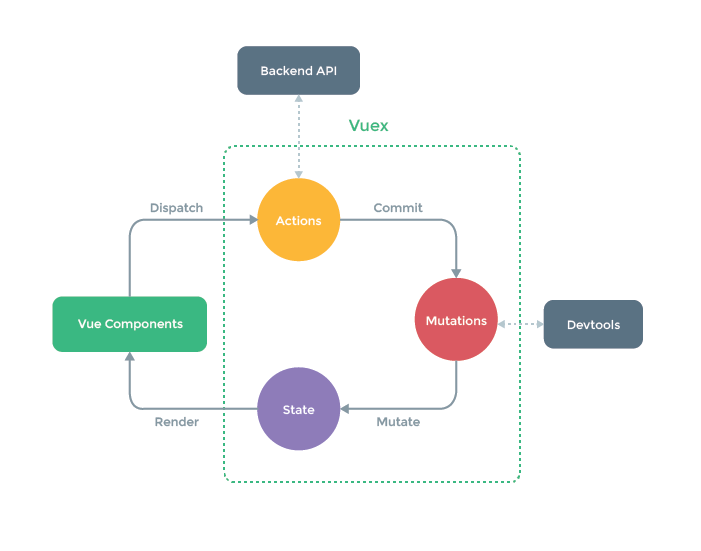

15_什么是vuex
什么是vuex？
Vuex 是一个专为 Vue.js 应用程序开发的状态管理器，采用 集中式存储 管理所有组件的状态。
主要用于维护vue组件间共用的一些 变量 和 方法
vuex的原理其实非常简单，它为什么能实现所有的组件共享同一份数据？
因为vuex生成了一个store实例，并且把这个实例挂在了所有的组件上，所有的组件引用的都是同一个store实例。
store实例上有数据，有方法，方法改变的都是store实例上的数据。由于其他组件引用的是同样的实例，所以一个组件改变了store上的数据，导致另一个组件上的数据也会改变，就像是一个对象的引用。
vuex的核心概念？
每一个 Vuex 应用的核心就是 store（仓库）。“store”基本上就是一个容器，它包含着你的应用中大部分的状态 (state)。
vuex的核心概念和核心概念图：
1、state - Vuex store实例的根状态对象，用于定义共享的状态变量。
2、Action -动作，向store发出调用通知，执行本地或者远端的某一个操作（可以理解为store的methods）
3、Mutations -修改器，它只用于修改state中定义的状态变量。
4、getter -读取器，外部程序通过它获取变量的具体值，或者在取值前做一些计算（可以认为是store的计算属性）
Vuex的应用场景：
Vuex主要用于：
1、多层嵌套的组件之间进行状态传递
2、兄弟组件间进行状态传递时（当然也可以使用中央事件总线BUS）
3、多组件共享状态时
更为具体的场景：组件之间的状态、音乐播放、登录状态、加入购物车…
vuex的使用？
#1.安装vuex
npm install vuex@next --save
#2.main.js
import { createStore } from "vuex";
// new Vuex.Store()实例，得到一个数据仓储对象
// 可以在组件中通过this.$store.state.xx 来访问store中的数据
var store = createStore({
//state相当于组件中的data
state: {
count: 0
},
//如果要修改store中state的值，需要调用 mutations提供的方法，可以通过this.$store.commit('方法名')来调用
mutations: {
increment(state) {
state.count++
},
//mutations函数参数列表中最多支持两个参数，其中参数1是state； 参数2是通过commit提交过来的参数；
subtract(state, obj) {
console.log(obj)
state.count -= obj.step;
}
},
getters: {
//这里的getters只负责对外提供数据，不负责修改数据，如果想要修改 state 中的数据需要在mutations中修改
optCount: function (state) {
return '当前最新的count值是：' + state.count
}
}
})
// 总结：
// 1. state中的数据，不能直接修改，如果想要修改，必须通过 mutations
// 2. 如果组件想要直接 从 state 上获取数据： 需要 this.$store.state.***
// 3. 如果组件想要修改数据，必须使用 mutations 提供的方法，需要通过 this.$store.commit('方法的名称'， 唯一的一个参数)
// 4. store中state上的数据在对外提供的时候建议做一层包装，推荐使用 getters。调用的时候则用this.$store.getters.***
import { createApp } from "vue";
import App from "./App.vue";
import store from './store'
const app = createApp(App);
//挂载路由实例(use方法挂载插件)
app.use(store).mount("#app");
#3.index.html
<body>
<div id="app"></div>
</body>
#4.App.vue
<template>
<div>
<h1>这是 App 组件</h1>
<hr>
<counter></counter>
<hr>
<amount></amount>
</div>
</template>
<script>
import counter from "./components/counter.vue";
import amount from "./components/amount.vue";
export default {
data() {
return {};
},
components: {
counter,
amount
}
};
</script>
#5.components/amount.vue
<template>
<div>
<h3>{{ $store.getters.optCount }}</h3>
</div>
</template>
#6.components/counter.vue
<template>
<div>
<input type="button" value="绑定事件-减少" @click="sub">
<input type="button" value="绑定事件-增加" @click="add">
<br>
<input type="text" v-model="$store.state.count">
</div>
</template>
<script>
export default {
data() {
return {
};
},
methods: {
add() {
this.$store.commit("increment");
},
sub() {
this.$store.commit("subtract",{ step:3});
}
}
};
</script>
本作品采用 知识共享署名-非商业性使用-禁止演绎 4.0 国际许可协议 进行许可。